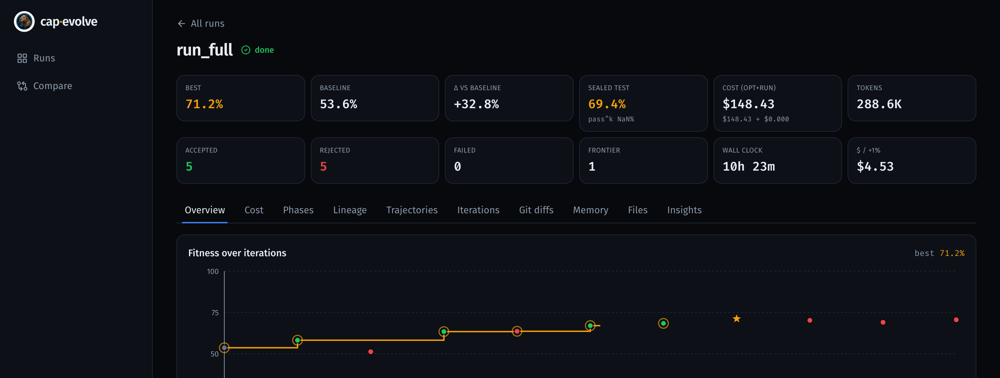

cap-evolve
Optimize agentic capabilities — with agents
cap-evolve improves an AI agent's prompts, tools, and skills by learning from failed evaluation traces. You bring the agent and the eval you already have. cap-evolve runs the loop — evaluate → diagnose → propose an edit → keep it only if it beats a held-out split by a significant margin → commit — and reports one honest number. It optimizes what your agent reads, not its weights.
Try it in two minutes — no API key required
git clone https://github.com/skillberry-ai/cap-evolve.git
cd cap-evolve
python3 -m venv .venv && source .venv/bin/activate
pip install ./core
bash examples/toy_calc/run.sh
toy_calc is a deterministic zero-API stand-in: the seed prompt scores
0.0; the optimized prompt is gate-accepted and scores 1.0 on
the sealed test split — no model is called. Full walkthrough:
Getting started.

Why cap-evolve
Five things that shape how cap-evolve works — and how it differs from what came before.
The optimizer is itself a coding-agent CLI (Claude Code, Codex, and 12 more): it reads failing traces and proposes bold multi-part edits — no gradient descent, no heuristic search.
How the optimizer runs → 02System prompts, tool code, MCP surfaces, skill packages — one at a time or combined. What your agent reads, not its weights.
What it optimizes → 03Cap the cost of each iteration — the optimizer stops at the budget you set, not at the point of diminishing returns. Wall-clock time next.
On the roadmap → 04
Iteration state lives in git-committed markdown — LEDGER,
JOURNAL, PROCESS. Every run is a browseable history you
can inspect, edit, or resume.
Test split sealed until finalize, scored exactly once; every accepted iteration passes a paired-significance gate on val — on the primary metric only, with any shown-only secondaries (cost, latency, sub-checks) displayed but never gating; every published number ships with its run artifact.
Splits, gates, sealing →Results
Numbers are cross-checked against committed run artifacts. Each is labeled fit metric (no holdout) or held-out (test scored once on ids the optimizer never saw). Full detail, models, task/trial counts, commits, and costs: Results.
| Benchmark | Split | Baseline → Optimized | Gain |
|---|---|---|---|
| toy_calc (zero-API) | sealed test | 0.0 → 1.0 |
deterministic proof |
| τ²-bench airline (policy + tools) | val — fit metric | 0.536 → 0.712 |
+0.176 / +32.8% |
| τ²-bench airline (held-out 30/10/10) | sealed test | 30.0 → 47.5 |
+17.5 pp / +58.3% |
| SkillsBench (skill package) | sealed test (held-out) | 0.556 → 0.667 |
+0.111 / +20.0% |
What cap-evolve optimizes
Pick one — or combine them, e.g. [system-prompt, tools].
| Capability | What the optimizer may change |
|---|---|
| System prompts | Rewrite / consolidate / add rules, examples, output contracts — never drop a needed rule |
| Tool implementations | Edit tool code for deterministic enforcement; add/wrap/swap tools (never bare-remove) |
| MCP tool surfaces | Safe edits only — tool docs, in-description examples, and which tools are exposed |
| Skill packages | An Agent Skill dir — SKILL.md bodies, references, and executable scripts |
Choose your path
Every path shares the same core install and the same honesty guarantees.
| Path | Use it when | Start |
|---|---|---|
| Claude Code plugin | You use Claude Code and want slash commands + honesty hooks | claude --plugin-dir ./plugins/cap-evolve |
| Another coding-agent host | Codex, Gemini, opencode, Cursor, Droid, Copilot, Kimi, Pi, Antigravity, openclaw, IBM Bob, or bare | ./install.sh --host <name> |
| Manual adapter + CLI | You want to wire the adapter yourself and drive cap-evolve directly |
Optimize your own agent |
Documentation
Hand-crafted pages for the four hero topics below; the rest are on GitHub, alongside the code they describe.
Your first successful run, in two minutes, with no API key. The toy_calc loop end-to-end.
Full benchmark detail: toy_calc, τ²-bench airline (fit-metric + held-out), SkillsBench. Reproducibility and artifacts.
The pipeline (intake → check → baseline → algorithm → finalize → report), the optimizer context, and the skill library.
Deterministic vs agent orchestration, and the agent-optimize algorithm — the conversational agent drives the whole loop itself, honestly, sealing the test once.
Wire one small adapter — three methods. Two ways: let your coding agent do it, or drive the CLI yourself.
Copy-and-run adapters — JSONL, HuggingFace, tau2, SWE-bench, SkillsBench — for any litellm provider. Config, not code.
Host-specific setup, credentials, and the dashboard.
The full method signatures and semantics if you're implementing an adapter.
Splits, gates, sealing — the discipline that keeps the numbers meaningful.
Positioning vs other tool-optimization work (EvoTool, Evolutionary Context Search) — with the caveats.
Adding a capability, an algorithm, or a new optimizer backend.
Installation or a run failed — start here.
Planned work — what's coming next.
toy_calc (deterministic), tau2_airline (policy + tool code), skillsbench (skill package).